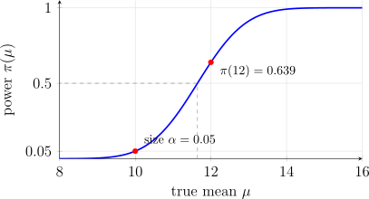

3.2 Most Powerful Tests
When both hypotheses are simple, \(H_0\colon \theta =\theta _0\) against \(H_1\colon \theta =\theta _1\), we are choosing between two completely specified distributions, and the power function has just two values: the size \(\pi (\theta _0)\) and the power \(\pi (\theta _1)\).
Definition 3.2.1. A test with critical region \(R^*\) is a most powerful (MP) test of size \(\alpha \) of \(H_0\colon \theta =\theta _0\) against \(H_1\colon \theta =\theta _1\) if
- (i)
- \(P_{\theta _0}(X\in R^*) = \alpha \), and
- (ii)
- \(P_{\theta _1}(X\in R^*)\ge P_{\theta _1}(X\in R)\) for every other critical region \(R\) with \(P_{\theta _0}(X\in R)\le \alpha \).
Write \(L(\theta ;x) = \prod _{i=1}^n f(x_i;\theta )\) for the likelihood. If \(H_1\) is true we expect \(L(\theta _1;x)\) to be large compared with \(L(\theta _0;x)\), so a natural rule rejects \(H_0\) when the likelihood ratio \(\frac {L(\theta _1;x)}{L(\theta _0;x)}\) is large. The Neyman–Pearson lemma says this rule cannot be beaten.
Lemma 3.2.2 (Neyman–Pearson lemma). Let \(X\) have joint density (or probability function) \(f(x;\theta )\). For a constant \(k>0\) let \[R = \left \{x : \frac {f(x;\theta _1)}{f(x;\theta _0)}>k\right \} ,\] and let \(\alpha = P_{\theta _0}(X\in R)\). Then \(R\) is a most powerful critical region of size \(\alpha \) for testing \(H_0\colon \theta =\theta _0\) against \(H_1\colon \theta =\theta _1\).
Proof. Let \(R_1\) be any critical region with \(P_{\theta _0}(X\in R_1)\le \alpha \). We write \(f_0\) and \(f_1\) for \(f(x;\theta _0)\) and \(f(x;\theta _1)\), and use integrals; for a discrete distribution replace them by sums. Split each region into its part shared with the other and its own part: \[R = (R\cap R_1)\cup (R\cap R_1^c),\qquad R_1 = (R\cap R_1)\cup (R_1\cap R^c).\] The shared part cancels in differences, so \begin {equation} \label {eq:npdiff1} P_{\theta _1}(X\in R) - P_{\theta _1}(X\in R_1) = \int _{R\cap R_1^c} f_1\,dx - \int _{R_1\cap R^c} f_1\,dx , \end {equation} and in the same way \begin {equation} \label {eq:npdiff0} \int _{R\cap R_1^c} f_0\,dx - \int _{R_1\cap R^c} f_0\,dx = P_{\theta _0}(X\in R) - P_{\theta _0}(X\in R_1) \ge \alpha - \alpha = 0 . \end {equation} On \(R\cap R_1^c\) we are inside \(R\), so \(f_1>k f_0\); on \(R_1\cap R^c\) we are outside \(R\), so \(f_1\le k f_0\). Hence \begin {equation} \label {eq:npbound} \int _{R\cap R_1^c} f_1\,dx \ge k\int _{R\cap R_1^c} f_0\,dx,\qquad \int _{R_1\cap R^c} f_1\,dx \le k\int _{R_1\cap R^c} f_0\,dx . \end {equation} Putting (3.3) into (3.1) and then using (3.2), \[P_{\theta _1}(X\in R) - P_{\theta _1}(X\in R_1) \ge k\left [\int _{R\cap R_1^c} f_0\,dx - \int _{R_1\cap R^c} f_0\,dx\right ]\ge 0 .\] So no region of size at most \(\alpha \) has more power than \(R\). □
Remark 3.2.3. In practice the inequality \(\frac {L(\theta _1;x)}{L(\theta _0;x)}>k\) is simplified, by taking logarithms and collecting constants, until it reads \(t(x)>c\) or \(t(x)<c\) for some statistic \(T\). Each simplification replaces \(k\) by a new constant, and we only need to keep track of which direction the inequality points. The constant \(c\) is then found from the size condition \(P_{\theta _0}(X\in R) = \alpha \), using the distribution of \(T\) under \(H_0\).
Example 3.2.4. Let \(X_1,\dots ,X_n\) be a random sample from \(N(\mu ,16)\). Find the most powerful test of size \(\alpha = 0.05\) of \(H_0\colon \mu = 10\) against \(H_1\colon \mu = 12\). How large must \(n\) be for the power to reach \(0.90\)?
Solution. The likelihood ratio is \[\frac {L(12;x)}{L(10;x)} = \frac {(32\pi )^{-n/2}\exp \left (-\frac {1}{32}\sum (x_i - 12)^2\right )} {(32\pi )^{-n/2}\exp \left (-\frac {1}{32}\sum (x_i - 10)^2\right )} = \exp \left (\frac {1}{32}\left [\sum (x_i - 10)^2 - \sum (x_i - 12)^2\right ]\right ).\] Expanding the squares, \((x_i - 10)^2 - (x_i - 12)^2 = 4x_i - 44\), so the ratio is \[\exp \left (\frac {4\sum x_i - 44n}{32}\right ),\] an increasing function of \(\sum x_i\), and hence of \(\bar x\). The ratio exceeds \(k\) exactly when \(\bar x>c\) for some \(c\), so \(R = \{x : \bar x>c\}\). Under \(H_0\), \(\bar X\sim N\left (10,\frac {16}{n}\right )\) and \[0.05 = P_{10}(\bar X>c) = P\left (Z>\frac {c - 10}{4/\sqrt n}\right ) \quad \Longrightarrow \quad c = 10 + 1.645\,\frac {4}{\sqrt n} = 10 + \frac {6.58}{\sqrt n} .\] The MP test rejects \(H_0\) if \(\bar x>10 + \frac {6.58}{\sqrt n}\).
The power is \[\pi (12) = P_{12}(\bar X>c) = P\left (Z>\frac {c - 12}{4/\sqrt n}\right ) = P\left (Z>1.645 - \frac {\sqrt n}{2}\right ).\] For power \(0.90\) we need \(1.645 - \frac {\sqrt n}{2} = -1.2816\), so \(\sqrt n = 2(2.9266) = 5.853\) and \(n = 34.3\). A sample of \(n = 35\) is needed. For \(n = 16\), \(c = 11.645\) and the power is \(0.639\), as in example 3.1.8; figure 3.2 shows the whole power function for \(n = 16\).

Example 3.2.5. Let \(X_1,\dots ,X_n\) be a random sample from \(N(\mu ,\sigma ^2)\) with \(\sigma ^2\) known. Find the most powerful test of size \(\alpha \) of \(H_0\colon \mu = \mu _0\) against \(H_1\colon \mu = \mu _1\), where \(\mu _1>\mu _0\), and its power.
Solution. As in example 3.2.4, \[\frac {L(\mu _1;x)}{L(\mu _0;x)} = \exp \left (\frac {1}{2\sigma ^2}\sum \left [(x_i - \mu _0)^2 - (x_i - \mu _1)^2\right ]\right ) = \exp \left (\frac {(\mu _1 - \mu _0)}{\sigma ^2}\sum x_i - \frac {n(\mu _1^2 - \mu _0^2)}{2\sigma ^2}\right ).\] Since \(\mu _1 - \mu _0>0\) this increases with \(\bar x\), so \(R = \{x : \bar x>c\}\). Writing \(z_\alpha \) for the point with \(P(Z>z_\alpha ) = \alpha \), the size condition gives \[c = \mu _0 + z_\alpha \,\frac {\sigma }{\sqrt n} ,\] and the power is \[\pi (\mu _1) = P\left (Z>\frac {c - \mu _1}{\sigma /\sqrt n}\right ) = 1 - \Phi \left (z_\alpha - \frac {(\mu _1 - \mu _0)\sqrt n}{\sigma }\right ).\] The power grows with the sample size \(n\) and with the distance \(\frac {\mu _1 - \mu _0}{\sigma }\) measured in standard deviations.
Example 3.2.6. Let \(X_1,\dots ,X_n\) be a random sample from \(N(\mu ,\sigma ^2)\) with \(\mu \) known. Find the most powerful test of size \(\alpha \) of \(H_0\colon \sigma = \sigma _0\) against \(H_1\colon \sigma = \sigma _1\), where \(\sigma _1<\sigma _0\).
Solution. Write \(q = \sum _{i=1}^n (x_i - \mu )^2\). The likelihood ratio is \[\frac {L(\sigma _1;x)}{L(\sigma _0;x)} = \frac {(2\pi \sigma _1^2)^{-n/2} e^{-q/(2\sigma _1^2)}}{(2\pi \sigma _0^2)^{-n/2} e^{-q/(2\sigma _0^2)}} = \left (\frac {\sigma _0}{\sigma _1}\right )^n \exp \left (-\frac {q}{2}\left [\frac {1}{\sigma _1^2} - \frac {1}{\sigma _0^2}\right ]\right ).\] Because \(\sigma _1<\sigma _0\), the bracket is positive and the ratio decreases in \(q\). So the ratio exceeds \(k\) exactly when \(q<c\), and \(R = \{x : q<c\}\): small spread around \(\mu \) is evidence for the smaller variance.
Under \(H_0\), \(\frac {Q}{\sigma _0^2} = \sum \left (\frac {X_i - \mu }{\sigma _0}\right )^2 \sim \chi ^2(n)\) by corollary 1.3.40. Writing \(\chi ^2_{n,\gamma }\) for the point with upper-tail probability \(\gamma \), \[\alpha = P_{\sigma _0}(Q<c) = P\left (\chi ^2(n)<\frac {c}{\sigma _0^2}\right ) \quad \Longrightarrow \quad c = \sigma _0^2\,\chi ^2_{n,1-\alpha } .\] The MP test rejects \(H_0\) if \(\sum (x_i - \mu )^2<\sigma _0^2\,\chi ^2_{n,1-\alpha }\).
Example 3.2.7. Let \(X_1,\dots ,X_n\) be a random sample from the exponential distribution \[f(x;\theta ) = \frac {1}{\theta }e^{-x/\theta },\qquad x>0,\ \theta >0 .\] Find the most powerful test of size \(\alpha \) of \(H_0\colon \theta = \theta _0\) against \(H_1\colon \theta = \theta _1\), where \(\theta _1<\theta _0\). Give the test and its power when \(n = 10\), \(\theta _0 = 2\), \(\theta _1 = 1\) and \(\alpha = 0.05\).
Solution. Write \(y = \sum x_i\). The likelihood ratio is \[\frac {L(\theta _1;x)}{L(\theta _0;x)} = \frac {\theta _1^{-n}e^{-y/\theta _1}}{\theta _0^{-n}e^{-y/\theta _0}} = \left (\frac {\theta _0}{\theta _1}\right )^n \exp \left (-\left [\frac {1}{\theta _1} - \frac {1}{\theta _0}\right ] y\right ).\] Since \(\theta _1<\theta _0\) the bracket is positive and the ratio decreases in \(y\), so \(R = \{x : \sum x_i<c\}\): short lifetimes point to the smaller mean.
To find \(c\) we need the distribution of \(Y = \sum X_i\). The sum of \(n\) independent \(\text {EXP}(\theta )\) variables is \(\text {GAM}(n,\theta )\), and then \(\frac {2Y}{\theta }\sim \text {GAM}(n,2) = \chi ^2(2n)\). Hence \[\alpha = P_{\theta _0}(Y<c) = P\left (\chi ^2(2n)<\frac {2c}{\theta _0}\right ) \quad \Longrightarrow \quad c = \frac {\theta _0}{2}\,\chi ^2_{2n,1-\alpha } .\] The MP test rejects \(H_0\) if \(\sum x_i<\frac {\theta _0}{2}\chi ^2_{2n,1-\alpha }\).
For \(n = 10\), \(\theta _0 = 2\) and \(\alpha = 0.05\), \(\chi ^2_{20,0.95} = 10.851\), so \(c = 10.851\): reject \(H_0\) if the ten lifetimes total less than \(10.85\). Under \(\theta _1 = 1\), \(2Y\sim \chi ^2(20)\), so the power is \[P_1(Y<10.851) = P\left (\chi ^2(20)<21.70\right ) = 0.643 .\]
Discrete distributions and randomised tests
For a discrete statistic the size \(P_{\theta _0}(T\ge c)\) jumps as \(c\) moves, and it may skip over the value \(\alpha \) we want. The remedy is to allow the test to reject with some probability \(\gamma \) when \(T\) falls exactly on the boundary. Such a randomised test is described by a function \(\phi (x)\in [0,1]\), the probability of rejecting \(H_0\) when \(x\) is observed; its power function is \(\pi (\theta ) = E_\theta \left [\phi (X)\right ]\). The Neyman–Pearson lemma holds for randomised tests as well, with the boundary \(\frac {f_1}{f_0} = k\) handled by randomisation.
Example 3.2.8. Let \(X_1,X_2,X_3\) be a random sample from the Bernoulli distribution \(f(x;\theta ) = \theta ^x(1 - \theta )^{1 - x}\), \(x = 0,1\). Find the most powerful test of size \(\alpha = 0.05\) of \(H_0\colon \theta = \frac 34\) against \(H_1\colon \theta = \frac 14\), and its power.
Solution. With \(y = \sum x_i\), \[\frac {L(\frac 14;x)}{L(\frac 34;x)} = \frac {(\frac 14)^y(\frac 34)^{3 - y}}{(\frac 34)^y(\frac 14)^{3 - y}} = 3^{3 - 2y},\] which decreases in \(y\). So the MP test rejects for small \(Y = \sum X_i\), and \(Y\sim \text {BIN}(3,\theta )\). Under \(H_0\) the probabilities are
| \(y\) | 0 | 1 | 2 | 3 |
| \(P_{3/4}(Y = y)\) | \(\frac {1}{64} = 0.0156\) | \(\frac {9}{64} = 0.1406\) | \(\frac {27}{64} = 0.4219\) | \(\frac {27}{64} = 0.4219\) |
Rejecting only when \(y = 0\) gives size \(0.0156\); rejecting when \(y\le 1\) gives size \(0.1562\). Neither is \(0.05\). So reject when \(y = 0\), and when \(y = 1\) reject with probability \(\gamma \), chosen so that \[\frac {1}{64} + \gamma \,\frac {9}{64} = 0.05 \quad \Longrightarrow \quad \gamma = \frac {0.05 - 0.015625}{0.140625} = 0.2444 .\] The test is \(\phi (x) = 1\) if \(y = 0\), \(\phi (x) = 0.2444\) if \(y = 1\), and \(\phi (x) = 0\) otherwise. Under \(\theta = \frac 14\), \(P(Y = 0) = P(Y = 1) = \frac {27}{64}\), so the power is \[\pi \left (\tfrac 14\right ) = \frac {27}{64} + 0.2444\cdot \frac {27}{64} = 0.525 .\] In practice one usually prefers a non-randomised test of level \(\alpha \), here the test that rejects only when \(y = 0\), and reports its actual size \(0.0156\).
Questions on this section
Stuck on something here? Ask below and it stays attached to this topic.